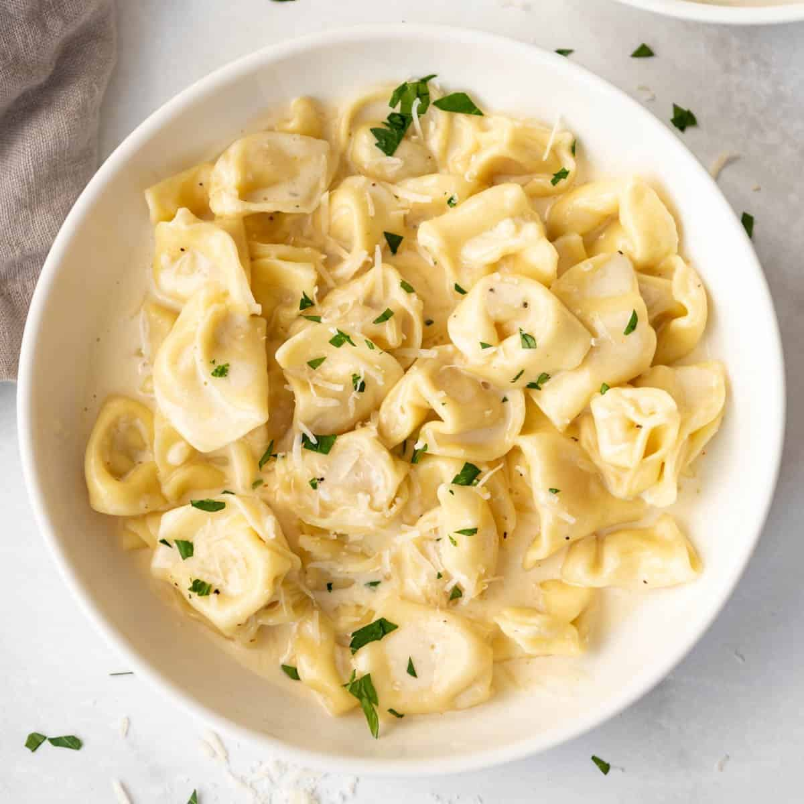

Tortellini

Description
A recipe for creamy, delicious tortellini. A real crowd pleaser you can eat as is or add protein.
Ingredients
- 1/2 cup butter
- 2 cups heavy whipping cream
- 4 ounces softened cream cheese
- 4 cloves garlic, minced
- 1 tsp oregano
- 1 tsp basil
- 1/2 tsp black pepper
- 1 cup fresh parmesan, grated
- 1 cup fresh asiago, grated
- 1 package Buitoni Mixed Cheese Tortellini
Instructions
- In large pot bring 3 quarts of water to boil. Add package of tortellini. Reduce heat and boil gently.
- Add butter, heavy whipping cream and cream cheese to medium saucepan. Whisk over medium heat until well combined.
- Add garlic, oregano, basil and black pepper. Whisk until smooth.
- Add asiago and parmesan. Whisk continually until well combined. Bring to a simmer and whisk until desired thickness.
- Check tortellini for softness. Drain into colander then toss with alfredo sauce.
- Enjoy!